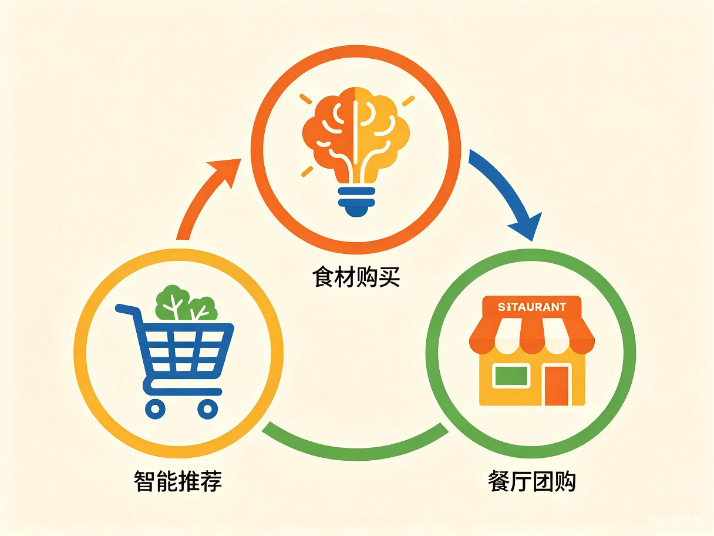

产品概览
一款基于AI技术的智能餐饮推荐工具，让每一餐都充满期待
我们解决什么问题
现代都市生活中，"今天吃什么"已成为一个普遍的决策瘫痪场景。无论是独居青年面对空荡荡的冰箱，还是上班族在午餐高峰期刷着千篇一律的外卖列表，选择成本的累积正在悄悄吞噬我们的生活质量和健康。据调研，超过78%的都市年轻人每天在餐饮决策上花费超过10分钟，而重复点餐导致的营养不均衡问题更是长期被忽视。
决策瘫痪
面对海量选择时的心理负担，导致最终随便应付或重复选择同样的食物。
外卖疲劳
长期依赖外卖导致口味单一、营养失衡，且经济成本持续攀升。
食材浪费
冰箱里的零散食材不知如何搭配，最终过期丢弃，造成资源浪费。
产品形态
今日食光机是一款基于微信小程序和独立App的双端智能推荐工具。核心功能包括：AI口味画像（通过用户历史选择和偏好标签构建个性化模型）、智能场景推荐（根据时间、天气、地理位置、冰箱库存等多维因素推荐最佳选项）、营养搭配引擎（确保推荐结果满足均衡膳食标准）以及一键闭环（直接跳转至外卖下单或食材购买）。
目标用户与痛点
精准定位三大核心人群，深度理解真实使用场景
核心用户画像
-
✓
独居青年（22-30岁）
工作忙碌，厨艺有限，经常一人食，希望快速解决用餐问题同时保证口味。
-
✓
忙碌上班族（25-35岁）
午餐和晚餐时间紧张，对效率要求高，愿意为便利付费，注重健康饮食。
-
✓
口味敏感人群
有特定饮食偏好或禁忌（如素食、低糖、不吃香菜等），现有平台筛选成本高。
典型使用场景
场景一：饭点前的灵魂拷问
中午12点，工作了一上午的小李打开食光机，输入"今天想吃点辣的，预算30元"，3秒内获得附近3家高评分川菜馆的精准推荐，附带团购优惠。
场景二：冰箱剩菜的创意重生
周末晚上，小王打开冰箱发现只剩鸡蛋、番茄和半颗洋葱。拍照上传后，食光机推荐"番茄洋葱烘蛋"，附带详细步骤和营养分析。
场景三：一周健康食谱规划
健身爱好者小张设定"增肌期、每日蛋白质120g、少油少盐"目标，食光机自动生成一周食谱，并一键生成食材采购清单。
价值与意义
从效率提升到商业闭环，创造多方共赢的价值网络
效率提升：从10分钟到1秒
今日食光机通过AI算法将用户的餐饮决策时间从平均10-15分钟压缩至1秒以内。这不仅仅是时间的节省，更是认知负荷的显著降低。研究表明，日常决策疲劳会导致后续工作效率下降15%-20%。通过将"吃什么"这一高频低价值决策自动化，用户可以将更多精力投入到真正重要的事务中。
商业价值：本地生活服务的变现潜力
当食光机积累了足够的用户口味数据后，将拥有极高的本地生活服务变现潜力。不同于传统的美食推荐平台，食光机的推荐是基于深度用户画像的主动精准推送，转化率预计可达行业平均水平的2-3倍。

商业闭环设计
食光机构建了一个从"发现"到"消费"的完整闭环：
-
1
智能推荐层
基于AI算法生成个性化推荐，建立用户信任。
-
2
交易转化层
一键跳转至餐厅团购或生鲜电商完成购买。
-
3
数据反馈层
消费数据回流优化推荐模型，形成飞轮效应。
市场分析
万亿级本地生活市场，智能餐饮推荐正处于爆发前夜
中国本地生活服务市场规模已从2020年的1.2万亿增长至2024年的3.2万亿，预计2028年将突破6.5万亿。其中，餐饮外卖和到店餐饮合计占比超过60%。在这个庞大的市场中，智能推荐作为连接用户与商家的关键枢纽，正成为新的竞争焦点。
竞争格局分析
| 竞品类型 | 代表产品 | 优势 | 劣势 | 食光机差异化 |
|---|---|---|---|---|
| 传统外卖平台 | 美团、饿了么 | 商家覆盖广、配送体系成熟 | 推荐算法粗放、用户选择成本高 | 精准个性化推荐、决策效率优先 |
| 美食社区 | 小红书、大众点评 | UGC内容丰富、社交属性强 | 信息过载、决策路径长 | AI主动推荐、缩短决策路径 |
| 菜谱应用 | 下厨房、豆果美食 | 菜谱详尽、社区活跃 | 缺乏个性化、无交易闭环 | 智能匹配+一键购买闭环 |
| 健康管理App | 薄荷健康、Keep | 专业营养数据、健康导向 | 使用门槛高、趣味性不足 | 平衡健康与口味、降低使用门槛 |
产品路线图
分阶段推进，从MVP到生态平台的演进路径
第一阶段：MVP验证期（0-6个月）
上线微信小程序，核心功能包括口味标签选择、基础场景推荐、附近餐厅搜索。目标获取10万种子用户，验证推荐算法效果和用户留存率。
第二阶段：功能扩展期（6-12个月）
推出独立App，新增冰箱食材识别、营养分析、一周食谱规划等功能。接入首批餐厅团购和生鲜电商合作，启动商业化试点。
第三阶段：数据飞轮期（12-24个月）
基于积累的用户口味大数据，优化推荐精准度至行业领先水平。扩展B端服务，为餐饮商家提供选品和营销洞察。实现月度盈亏平衡。
第四阶段：生态平台期（24-36个月）
构建开放生态，接入更多本地生活服务场景（如预制菜、私厨上门）。探索会员订阅和企业团餐等增值服务，成为本地生活智能决策入口。
总结与展望
用科技温暖每一餐，让选择不再困难
今日食光机不仅仅是一个餐饮推荐工具，更是对现代人生活方式的一次温柔革新。我们相信，技术的终极价值在于让人从繁琐的决策中解放出来，回归生活本身的美好。
从解决"今天吃什么"这一微小痛点出发，食光机将逐步构建起一个连接用户、商家、食材供应商的智能餐饮生态。在这个过程中，我们始终坚持以用户口味体验为核心，以数据智能为驱动，以本地生活服务变现为可持续商业模式。
未来，当每一位用户打开食光机，看到的不仅是一份推荐列表，更是一个懂TA口味、关心TA健康、愿意为TA节省时间的AI伙伴。这就是今日食光机的愿景 —— 让每一餐都充满期待。